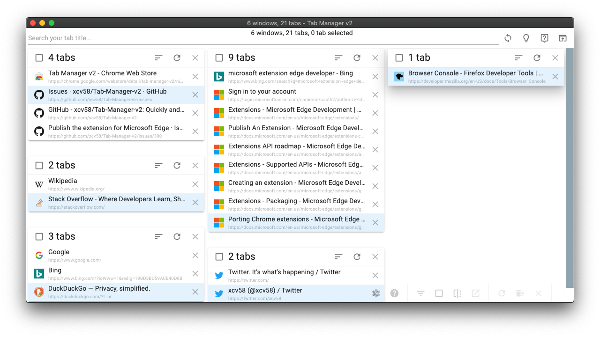

A keyboard-friendly browser extension for organizing a large number of tabs across windows. Search, move, group, and manage without bouncing between windows.

Too Naive
Lacks advanced features like bulk operations, history integration, or
robust fuzzy finding.
Endless Scanning
Reaching for the mouse, high cognitive load for finding that one
tab out of a hundred.
Instant Keyboard Control
Keyboard-driven search, bulk selection, native tab
groups, and muscle memory shortcuts.
Find open tabs by title or URL instantly, with optional browser history integration directly from the main search box.
Navigate the list, select items, and run actions purely via keyboard shortcuts and a dedicated Command Palette.
Select multiple tabs matching a search query. Move them between windows, group them together, or close them all at once.
Automatically highlights duplicate tabs. Easily select and clean them up to free system resources.
Manage native browser tab groups. Rename, recolor, collapse, and ungroup without leaving the extension.
Beautiful Light and Dark themes. Adjustable tab width, font size, toolbar visibility, and URL display preferences.
Safari does not support the tabs.move() WebExtension API that Tab Manager v2 depends on
for drag-and-drop reordering and moving tabs between windows. Those are core features, so Safari
support would be incomplete.
Custom window names would only exist inside this extension and would duplicate browser-native grouping features. Please use built-in browser tab groups; you can rename them directly from Tab Manager v2.
Settings are stored in browser sync storage when supported by your browser. If unavailable, it falls back to local storage so the extension remains fully functional.
Tab Manager v2 requires necessary tab, storage, and history permissions strictly to provide its core organizational functionality locally inside your browser. No tracking or analytics.
 Chrome
Chrome
 Firefox
Firefox
 Edge
Edge